전기철도기사 (2014-05-25 기출문제)
1과목: 전기철도공학
1. 전차전의 편위를 정하는 요소가 아닌 것은?
- 전기차 동요에 따른 집전장치의 편위
- 풍압에 따른 전차선의 편위
- 곡선로에 의한 전차선의 편위
- 곡선로의 건축한계에 따른 전차선의 편위
(정답률: 알수없음)

2. 교류 강체 가선방식에서 컨덕터 레일구간의 온도변화에 의한 리지드바의 팽창을 상쇄시켜주는 장치는?
- 확장장치
- 직접유도장치
- 건널선장치
- 지상부이행장치
(정답률: 알수없음)
3. 강체 전차선로에서 합성저항(R0)을 구하는 식은? (단, RA는 알루미늄 T-bar의 저항, RC는 전차선의 저항)
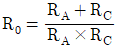
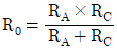
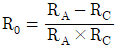
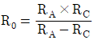
(정답률: 알수없음)
4. 직류강체방식(T-bar)에서 지상부의 가공 전차선이 터널내로 들어와 강체 전차선으로 바뀌어지는 부분에 팬터그래프가 자연스럽게 옮겨지면서 원활하게 운행할 수 있도록 하는 장치는?
- 건널선 장치
- 흐름 방지 장치
- 지상부 이행 장치
- 엔드 어프로치
(정답률: 알수없음)
5. 교류 강체 전차선에서 컨덕트 레일의 무게로 인하여 지지점에서 작용하는 장력 σ1[N/mm2]의 계산식은? (단, q : ga+gc로서 알루미늄과 구리를 합산한 단위중량[N/m], a : 경간[m], Wy-y : y-y축의 저항모멘트[cm3]이다.)
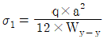
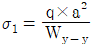
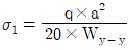
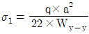
(정답률: 알수없음)
6. 부동률을 ε, 가선과 팬터그래프가 공진하는 속도를 Vc라할 때 이선율 시작하는 속도 Vr 을 나타내는 식은?
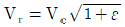
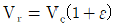
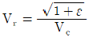
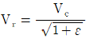
(정답률: 알수없음)
7. 가공전차선로의 자동장력조정장치 종류에 해당하지 않는 것은?
- 활차식
- 조정스트랩식
- 도르래식
- 스프링식
(정답률: 알수없음)
8. 고속도 차단기 특성에서 회로에 고장이 계속 되거나, 폐로 되는 순간에 고장이 발생하는 경우에 즉시 차단하도록 되어 있는 것은?
- 선택특성
- 트립자유
- 불요동작
- 자기유지
(정답률: 알수없음)
9. 50kg 궤조인 단선궤조의 특성저항은 약 몇 Ω인가? (단, 궤조 2개의 병렬로 본드를 포함한 저항은 0.01627 Ω/km 이고, 누설저항은 0.9 Ωㆍkm 이다.)
- 0.134
- 0.121
- 0.018
- 0.015
(정답률: 알수없음)
10. 전차선 110mm2의 허용장력을 1200kgf로 할 때 잔존단면적은 약 몇 [mm2]인가? (단, 안전율은 2.2, 전차선의 파괴강도를 35kgf/mm2 로 한다.)
- 44.32
- 51.78
- 67.57
- 75.42
(정답률: 알수없음)
11. 바람의 영향이 없는 역 구내의 경우 전차선로의 표준장력이 1000kgf 이며, 단위중량이 1.785kg/m 이다. 전주경간이 50m 일 때 표준가고는 약 몇 mm 인가?
- 580
- 708
- 960
- 1210
(정답률: 알수없음)
12. 강체전차선의 굵기가 110[mm2]이고 경간의 길이가 10[m]일 때 이도는 약 몇 [mm] 인가? (단, 특정경간의 중량: 67.7[N/m], 탄성계수: 69000[N/mm2], y-y축의 관성 모멘트: 339cm4)
- 3.1
- 4.9
- 7.5
- 11.0
(정답률: 알수없음)
13. 곡선구간의 선로에서 외측의 궤조를 내측의 궤조보다 높이는 것을 무엇이라 하는가?
- 제3레일
- 캔트
- 슬랙
- 고저차
(정답률: 알수없음)
14. 전차선의 이선시간이 수십분의 일초 정도의 것으로 전차선 또는 팬터그래프 습판의 마세한 진동에 따른 이선은?
- 대이선
- 소이선
- 중이선
- 특이선
(정답률: 알수없음)
15. 고도가 10mm이고 반지름이 1000m인 곡선 궤도를 주행할 때 열차가 낼 수 있는 최대 속도는 약 및 km/h 인가? (단, 궤간은 1435mm로 한다.)
- 29.75
- 38.25
- 49.68
- 68.26
(정답률: 알수없음)
16. 교류 25[kV] 급전 방식에서 작업시 또는 사고시에 정전구간의 단축을 주목적으로 하는 것은?
- 변전소
- 타이포스트
- 보조급전구분소
- 정류포스트
(정답률: 알수없음)
17. 경간 50m, 구배 3/1000, 전차선 높이 5.2m 인 경우 다음 전주의 전차선 높이[m]는?
- 5.02
- 5.03
- 5.04
- 5.⑤
(정답률: 알수없음)
18. 전차선로의 보호방식 중 단독점지방식에 대한 설명으로 맞는 것은?
- 이중절연방식, AT보호방식 또는 섬락보호지선방식을 적용할 수 없는 경우 당해 설비를 단독으로 제1종 점지 시행
- 빔, 완철, 애자금구 등을 전선 또는 지락도대로 접속하고 방전 간극을 통하여 부급전선 또는 AT보호선 등에 접속
- 섬락사고가 발생하면 사고전류는 섬락보호지선으로 흘러 대지전위가 상승되며 보안기가 동작되어 AT보호선을 통하여 사고전류를 변전소로 회귀시키는 금속회로를 구성하는 보호방식
- 가능한 한 많은 금속구조울을 둥전위 접지망을 형성하도록 레일과 접속시키는 것으로 이중절연방식으로 지칭
(정답률: 알수없음)
19. 교류전기방식 전차선로에서 애자성락사고 등 부급전선에 이상전압이 발생하면 일정값 초과시 동작하는 보안기는 지표상 몇(m) 높이에 설치하는가?
- 2.5m이상
- 3.0m이상
- 3.5m이상
- 4.0m이상
(정답률: 알수없음)
20. 원격감시제어장치, 연락차단장치 등의 전송회선을 전력계통 사고 시에 대비하기 위한 기기는?
- 피뢰기
- 정류기
- 보안기
- 계전기
(정답률: 알수없음)
2과목: 전기철도 구조물공학
21. 길이가 12m인 구조물에 온도가 15°C에서 50°C로 상승했을 때, 온도에 의한 구조물의 신축량[mm]은? (단, 강재의 열팽창계수는 1.0×10-5 이다.)
- 0.36
- 4.2
- 6.3
- 7.4
(정답률: 알수없음)
22. 한 점에 작용하는 3개의 힘이 서로 평형을 이루고 있다면 이 세 개의 힘은 동일한 평면상에 있고 일정에서 만나는데, 이때 각각의 힘은 다른 두 힘의 사이각의 정현(sine)에 정비례 한다는 이론은?
- 훅크의 법칙
- 라미의 정리
- 프와송의 법칙
- 바리니온의 정리
(정답률: 알수없음)
23. 그림과 같은 부정정보에서 A점으로부터 전단력이 0 이 되는 지점 X 값은?
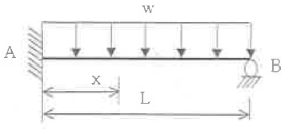
- (1/8)L
- (3/8)L
- (5/8)L
- (7/8)L
(정답률: 알수없음)
24. 단선구간의 진동방지 개소와 복선구간의 역간과 역구내 일부에서 사용되는 빔 (Beam)은?
- 강관 빔
- 크로스 빔
- V형 빔
- 고정 브래킷
(정답률: 알수없음)
25. 지름이 0.0185m이고 경간이 45m인 부급전선에 선로와 직각방향으로 가해지는 전선의 풍압하중[kgf]은? (단, 풍압하중의 수직투영면적당 하중 = 100[kgf/m2])
- 83.25
- 92.50
- 95.30
- 97.25
(정답률: 알수없음)
26. 그림과 같은 라멘구조물의 부정정차수는?
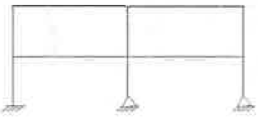
- 8차
- 9차
- 10차
- 11차
(정답률: 알수없음)
27. 지름 3[cm]. 길이 2[m]의 봉강에 25[t]의 인장력이 작용하여 15[mm]가 늘어났다면, 인장응력은 약[kg/cm2]인가?
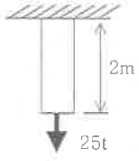
- 884
- 2527
- 3537
- 4537
(정답률: 알수없음)
28. 전철주 푸싱(pushing) 기초 바닥면의 유효지지력이 100[kN/m2]이고 기초 바닥면의 단면계수가 1.13[m3]일 때, 기초바닥면의 허용 저항모멘트 [kNㆍm]는?
- 100
- 113
- 200
- 226
(정답률: 알수없음)
29. 전차선로에 사용하는 지선 기초는 지지물 기초의 인상력에 대한 안전도를 고려하여 지선 기초의 안전률을 얼마 이상으로 적용하여 설계하여야 하는가?
- 1.5
- 2
- 2.5
- 3
(정답률: 알수없음)
30. 그림과 같은 트러스구조물에서 AC의 부재력[t]은?
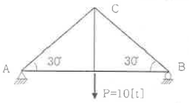
- 6t(인장)
- 6.5t(압축)
- 9t(인장)
- 10t(압축)
(정답률: 알수없음)
31. 등변 ㄱ형강 75×75×9로 구성된 조합철구의 단면적은 50.76cm2, 단면2차모멘트는 8613cm4일 때, 이 부재의 회전반지름[cm]은?
- 13.0
- 14.0
- 16.0
- 17.0
(정답률: 알수없음)
32. 전철용 전주가 단면이 20cm×20cm이고, 이 전주에 40tf의 압축력이 작용할 때, 이 전주의 압축응력[kgf/cm2]은?
- 50
- 80
- 100
- 500
(정답률: 알수없음)
33. 전철주 기초 중 특수기초에 해당하지 않는 것은?
- 앵커기초
- 우물통기초
- 쇄석기초
- 푸싱기초
(정답률: 알수없음)
34. 바깥지름이 200mm, 두께가 5mm인 원형 강관주가 있다. 이 강관주에 수직하중 100kN이 작용할 때 강관주에 발생하는 압축응력[MPa]은?
- 16.3
- 17.6
- 32.6
- 35.3
(정답률: 알수없음)
35. 전차선로 구조물에서 좌굴에 대한 위험도가 가장 작은 세장바는?
- 50
- 100
- 150
- 200
(정답률: 알수없음)
36. 지선의 취부각도가 30° 이고 전선의 최대장력이 1500[kgf]일 때, 지선이 받는 최대장력 [kgf]은?
- 1000
- 2000
- 3000
- 4000
(정답률: 알수없음)
37. 구조물이 핀으로 연결되어 이동은 할 수 없고 회전만 가능한 것으로 반력은 수평반력과 수직반력의 2개가 일어나는 지점은?
- 이동지점
- 힌지지점
- 고정지점
- 평형지점
(정답률: 알수없음)
38. 높이가 9[m] 인 단독지지주에 수평분포하중이 280[kN/m]가 작용할 때, 지면과의 경계점에서의 모멘트[Nㆍm]는?
- 1260
- 2520
- 11340
- 22680
(정답률: 알수없음)
39. 재료의 전단탄성계수(횡탄성계수) 80GPa, 푸아송비 0.3일 때. 종탄성계수 [GPa]는?
- 48
- 104
- 200
- 208
(정답률: 알수없음)
40. 전차선로에 설치된 단독지지주에서 지지점의 높이 6.7[m]인 전차선에 145.6[kgf]의 수평집중하중이 작용할 때 지면으로부터 3.2[m] 지점의 모멘트[kgfㆍm]는?
- 495.1
- 498.4
- 509.6
- 516.4
(정답률: 알수없음)
3과목: 전기자기학
41. 단면적 4 cm2의 철십에 6×10-4 Wb의 자속을 통하게 하려면 2800 AT/m의 자계가 필요하다. 이 철심의 비투자율은?
- 43
- 75
- 324
- 426
(정답률: 알수없음)
42. 내부장치 또는 공간을 물질로 포위시켜 외부 자계의 영향을 차폐시키는 방식을 자기차폐라 한다. 다음 중 자기차폐에 가장 좋은 것은?
- 강자성체 중에서 비투자율이 큰 물질
- 강자성체 중에서 비투자율이 작은 물질
- 비투자올이 1 보다 작은 역자성체
- 비투자율에 관계없이 물질의 두께에만 관계되므로 되도록이면 두꺼운 물질
(정답률: 알수없음)
43. 공기콘덴서의 고정 전극판 A와 가동 전극판 B간의 간격이 d=1 mm이고 전계는 극면간에서만 균등하다고 하면 정전용량은 몇 μf 인가? (단, 전극판의 상대되는 부분의 면적은 S (m2)라 한다.)
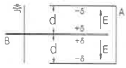
- S/9π
- S/18π
- S/36π
- S/72π
(정답률: 알수없음)
44. 진공 중에서 e (C)의 전하가 B (wb/m2)의 자계 안에서 자계와 수직방향으로 v (m/s)의 속도로 움직일 때 받는 힘(N)은?
- evB/μ0
- μ0evB
- evB
- eB/v
(정답률: 알수없음)
45. 구도체에 50 μC의 전하가 있다. 이때의 전위가 10 V 이면 도체의 정전용량은 몇 μF 인가?
- 3
- 4
- 5
- 6
(정답률: 알수없음)
46. 전자파가 유전율과 투자율이 각각 ε1 과 μ1 인 매질에서 ε2 와 μ2 인 매질에 수직으로 입사할 경우, 입사전계 E1 과 입사자계 H1 에 비하여 투과전계 E2 와 투과자계 H2 의 크기는 각각 어떻게 되는가? (단,
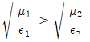
이다)- E2, H2 모두 E1. H1 에 비하여 크다.
- E2, H2 모두 E1. H1 에 비하여 적다.
- E2 는 E1 에 비하여 크고, H2 는 H1 에 비하여 적다.
- E2 는 E1 에 비하여 크고, H2 는 H1 에 비하여 크다.
(정답률: 알수없음)
47. 전자계에 대한 맥스웰의 기본 이론이 아닌 것은?
- 전하에서 전속선이 발산된다.
- 고립된 자극은 존재하지 않는다.
- 변위전류는 자계를 발생하지 않는다.
- 자계의 시간적 변화에 따라 전계의 회전이 생긴다.
(정답률: 알수없음)
48. 그림과 같은 손실 유전체에서 전원의 양극 사이에 채워진 동축케이블의 전력손실은 몇 W 인가? (단, 모든 단위는 MKS 유리화 단위이며, σ는 매질의 도전율(S/m)이라 한다.)
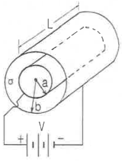
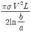
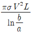
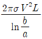
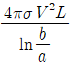
(정답률: 알수없음)
49. 자기인덕턴스 L (H)인 코일에 I (A)의 전류를 흘렸을 때 코일에 축적되는 에너지 W (J)와 전류 I (A)사이의 관계를 그래프로 표시하면 어떤 모양이 되는가?
- 포물선
- 직선
- 원
- 타원
(정답률: 알수없음)
50. 무한장 솔레노이드의 외부 자계에 대한 설명 중 옳은 것은?
- 솔레노이드 내부의 자계와 같은 자계가 존재한다.
- 1/2π 의 배수가 되는 자계가 존재한다.
- 솔레노이드 외부에는 자계가 존재하지 않는다.
- 권회수에 비례하는 자계가 존재한다
(정답률: 알수없음)
51. 맥스웰의 방정식과 연관이 없는 것은?
- 패러데이 법칙
- 쿨롱의 법칙
- 스토크의 법칙
- 가우스 정리
(정답률: 알수없음)
52. 두 유전체의 경계면에 대한 설명 중 옳은 것은?
- 두 유전체의 경계면에 전계가 수직으로 입사하면 두 유전체내의 전계의 세기는 같다.
- 유전율이 작은 쪽에서 큰 쪽으로 전계가 입사할 때 입사각은 굴절각보다 크다.
- 경계면에서 정전력은 전계가 경계면에 수직으로 입사할 때 유전율이 큰 쪽에서 작은 쪽으로 작용한다.
- 유전율이 큰 쪽에서 작은 쪽으로 전계가 경계면에 수직으로 입사할 때 유전율이 작은 쪽의 전계의 세기가 작아진다.
(정답률: 알수없음)
53. 자속일도 10 wb/m2 자계 중에 10 cm 도체를 자계와 30° 의 각도로 30 m/s 로 움직일 때, 도체에 유기되는 기전력은 몇 V 인가?
- 15
- 15√3
- 1500
- 1500√3
(정답률: 알수없음)
54. 자유공간에서 정육각형의 꼭짓점에 동량, 동질의 점전하 Q가 각각 놓여 있을 때 정육각형 한 변의 길이가 a 라 하면 정옥각형 중심의 전계의 세기는?
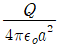
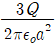
- 6Q
- 0
(정답률: 알수없음)
55. 반지름이 0.01m 인 구도체를 접지시키고 중심으로부터 0.1m 의 거리에 10 μC의 정전하를 놓았다. 구도체에 유도된 총 전하량은 몇 μC 인가?
- 0
- -1
- -10
- 10
(정답률: 알수없음)
56. 정전용량 0.06 μF의 평행판 공기콘덴서가 있다. 전극판 간격의 1/2 두께의 유리판을 전극에 평행하게 넣으면 공기부분의 정전용량과 유리판 부분의 정전용량을 직렬로 접속한 콘덴서가 된다. 유리의 비유전율을 εs=5 라 할 때 새로운 콘덴서의 정전용량은 몇 μF 인가?
- 0.01
- 0.⑤
- 0.1
- 0.5
(정답률: 알수없음)
57. 전류 I (A)가 흐르고 있는 무한 직선 도체로부터 r (m)만큼 떨어진 점의 자계의 크기는 2r (m)만큼 떨어진 점의 자계의 크기의 몇 배인가?
- 0.5
- 1
- 2
- 4
(정답률: 알수없음)
58. 규소강판과 같은 자심재료의 히스테리시스 곡선의 특징은?
- 히스테리시스 곡선의 면적이 적은 것이 좋다.
- 보자력이 큰 것이 좋다.
- 보자력과 잔류자기가 모두 큰 것이 좋다.
- 히스테리시스 곡선의 면적이 큰 것이 좋다.
(정답률: 알수없음)
59. 어떤 공간의 비유전율은 2 이고, 전위 V(x, y)=(1/x)+2xy2 이라고 할 때 점 (1/2, 2)에서의 전하밀도 ρ는약몇 oC/m3 인가?
- -20
- -40
- -160
- -320
(정답률: 알수없음)
60. 전기력선의 성질로서 틀린 것은?
- 전하가 없는 곳에서 전기력선은 발생, 소열이 없다.
- 전기력선은 그 자신만으로 폐곡선이 되는 일은 없다.
- 전기력선은 등전위면과 수직이다.
- 전기력선은 도체내부에 존재한다.
(정답률: 알수없음)
4과목: 전력공학
61. 전력선과 통신선 사이에 차폐선을 설치하여, 각 선 사이의 상호 임파던스를 각각 Z12, Z1S, Z2S 라 하고 차폐선 자기 임피던스를 ZS 라 할 때, 차폐선을 설치함으로서 유도전압이 줄게 됨을 나타내는 차폐선의 차폐계수는? (단. Z12는 전력선과 통신선과의 상호임피던스, Z1S는 전력선과 차폐선과의 상호임피던스, Z2S 는 통신선과 차폐선과의 상호임피던스이다.)
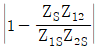
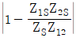
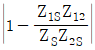
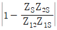
(정답률: 알수없음)
62. 전력설비의 수용률을 나타낸 것으로 옳은 것은?
- 수용률= [평균전력 (kW)/부하설비용량 (kW)]×100%
- 수용률= [부하설비용량 (kW)/평균전력 (kW)]x100%
- 수용률= [최대수용전력 (kW)/부하설비용량 (kW)]×100%
- 수용률= [부하설비용량 (kW)/최대수용전력 (kW)]x100%
(정답률: 알수없음)
63. 다중접지 3상 4선식 배전선로에서 고압측(1차측) 중성선과 저압측(2차측) 중성선을 전기적으로 연결하는 목적은?
- 저압축의 단락사고를 검출하기 위하여
- 저압측의 지락사고를 검출하기 위하여
- 주상변압기의 중성선측 부싱을 생략하기 위하여
- 고저압 혼촉시 수용가에 침입하는 상승전압을 억제하기 위하여
(정답률: 알수없음)
64. 그림과 같은 66 kV 선로의 송전전력이 20000 kW, 역률이 0.8(lag)일 때 a상에 완전 지략사고가 발생하였다. 지락계전기 DG에 흐르는 전류는 약 몇 A 인가? (단, 부하의 정상, 역상임피던스 및 기타 정수는 무시 한다.)
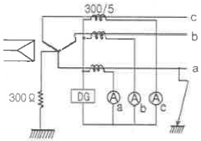
- 2.1
- 2.9
- 3.7
- 5.5
(정답률: 알수없음)
65. 지략 고장 시 문제가 되는 유도장해로서 전력선과 통신선의 상호 인덕턴스에 의해 발생하는 장해 현상은?
- 정전유도
- 전자유도
- 고조파유도
- 전파유도
(정답률: 알수없음)
66. 송ㆍ배전 계통에서의 안정도 향상 대책이 아닌 것은?
- 병렬 회선수 증가
- 병렬 콘덴서 설치
- 속응여자방식 채용
- 기기의 리액턴스 감소
(정답률: 알수없음)
67. 정격전압 6600 V, Y결선, 3상 발전기의 중성점을 1선 지락 시 자락전류를 100 A 로 제한하는 저항기로 접지하려고한다. 저항기의 저항 값은 약 몇 Ω 인가?
- 44
- 41
- 38
- 35
(정답률: 알수없음)
68. 그림과 같이 각 도체와 연피간의 정전용량이 C0, 각 도체간의 정전용량이 Cm인 3심 케이블의 도체 1조당의 작용정전용량은?
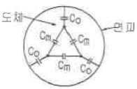
- C0 + Cm
- 3C0 + 3Cm
- 3C0 + Cm
- C0 + 3Cm
(정답률: 알수없음)
69. ACSR은 동일한 길이에서 동일한 전기저항을 갖는 경동연선에 비하여 어떠한가?
- 바깥지름은 크고 증량은 작다.
- 바깥지름은 작고 중량은 크다.
- 바깥지름과 중량이 모두 크다.
- 바깥지름과 중량이 모두 작다.
(정답률: 알수없음)
70. 화력발전소에서 재열기로 가열하는 것은?
- 석탄
- 급수
- 공기
- 증기
(정답률: 알수없음)
71. 전력용 콘덴서와 비교할 때 동기조상기의 특징에 해당되는 것은?
- 전력손실이 적다.
- 진상전류 이외에 지상전류도 취할 수 있다.
- 단락고장이 발생하여도 고장전류를 공급하지 않는다.
- 필요에 따라 용량을 계단적으로 변경할 수 있다.
(정답률: 알수없음)
72. 파동 임피던스가 300 Ω인 가공 송전선 1 km 당의 인덕턴스(mH/km)는? (단, 저항과 누설컨덕턴스는 무시한다.)
- 1.0
- 1.2
- 1.5
- 1.8
(정답률: 알수없음)
73. 변전소에서 지락사고의 경우 사용되는 계전기에 영상전류를 공급하기 위하여 설치하는 것은?
- PT
- ZCT
- GPT
- CT
(정답률: 알수없음)
74. 한류리액터를 사용하는 가장 큰 목적은?
- 충전전류의 제한
- 접지전류의 제한
- 누설전류의 제한
- 단락전류의 제한
(정답률: 알수없음)
75. 3상용 차단기의 용량은 그 차단기의 정격전압과 정격차단 전류와의 곱을 몇 배한 것인가?
- 1/√2
- 1/√3
- √2
- √3
(정답률: 알수없음)
76. 전력계통 설비인 차단기와 단로기는 전기적 및 기계적으로 인터록을 설치하여 연계하여 운전하고 있다. 인터록(interlock)의 설명으로 알맞은 것은?
- 부하 통전시 단로기를 열 수 있다.
- 차단기가 열려 있어야 단로기를 닫을 수 있다.
- 차단기가 닫혀 있어야 단로기를 열수 있다.
- 부하 투입 시에는 차단기를 우선 투입한 후 단로기를 투입한다.
(정답률: 알수없음)
77. 직류 송전 방식에 관한 설명 중 잘못된것은?
- 교류보다 실효값이 적어 절연계급을 낮출 수 있다.
- 교류방식보다는 안정도가 떨어진다.
- 직류계통과 연계시 교류계통의 차단용량이 작아진다.
- 교류방식처럼 송전손실이 없어 송전효율이 좋아진다.
(정답률: 알수없음)
78. 가공전선로에 사용되는 전선의 구비조건으로 틀린 것은?
- 도전율이 높아야 한다.
- 기계적 강도가 커야 한다.
- 전압강하가 적어야 한다.
- 허용전류가 적어야 한다.
(정답률: 알수없음)
79. 보일러에서 절탄기의 용도는?
- 증기를 과열한다.
- 공기를 예열한다.
- 보일러 급수를 데운다.
- 석탄을 건조한다.
(정답률: 알수없음)
80. 변전소, 발전소 등에 설치하는 피뢰기에 대한 설명 중 틀린 것은?
- 정격전압은 상용주파 정현파 전압의 최고 한도를 규정한 순시값이다.
- 피뢰기의 직렬갭은 일반적으로 저항으로 되어 있다
- 방전전류는 뇌충격전류의 파고값으로 표시한다.
- 속류란 방전현상이 실질적으로 끝난 후에도 전력계통에서 피뢰기에 공급되어 흐르는 전류를 말한다.
(정답률: 알수없음)